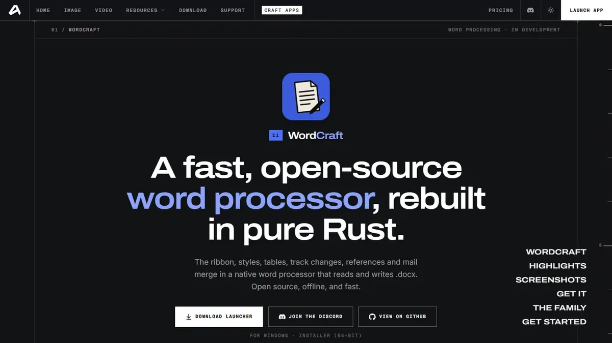
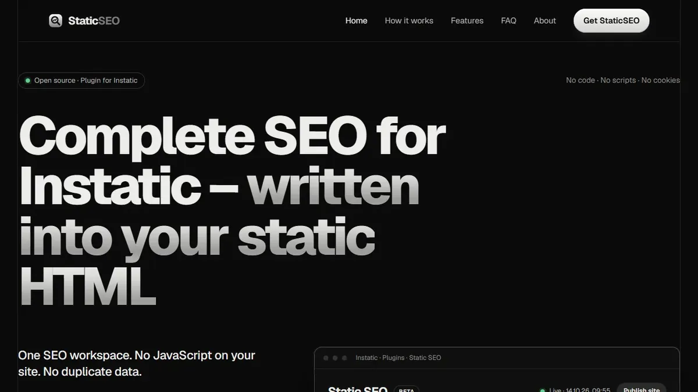
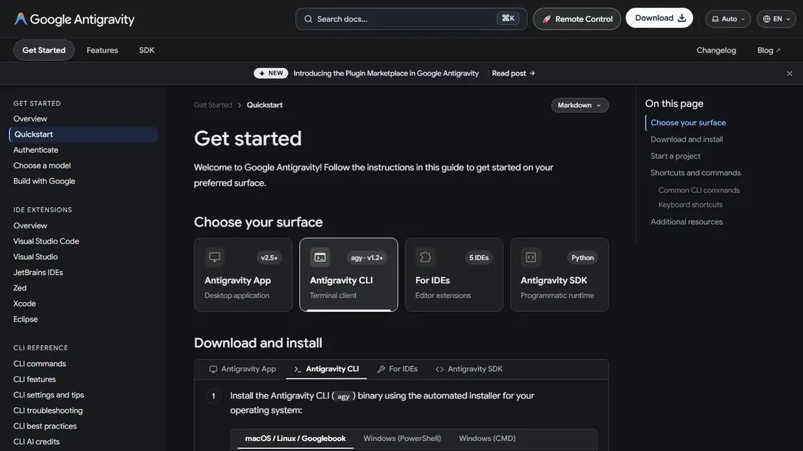

Featured & Top Picks
Highest-rated, open-source, and standout Development Tools tools curated by the community.

★ Top ChoiceWordCraft
Fast, open-source word processor with native .docx support and clean PDF export built in pure Rust.

★ Open Source PickStaticSEO
Open-source SEO tool and plugin for static websites that bakes meta tags, Open Graph cards, JSON-LD structured data, and XML sitemaps directly into static HTML at publish time.

★ Free Tier AvailableAntigravity CLI
Command-line AI coding agent that brings autonomous planning, editing, and automation directly into your terminal.
All Development Tools Tools (22)
Explore, search, and filter zero-backend services and developer APIs.
Terminal-native AI coding agent with slash commands and workflow automation
AI-first development environment with pair programming and browser automation
Visual desktop web design editor for creating responsive Bootstrap sites and exporting clean HTML
Export and publish WordPress Bricks sites as static HTML to GitHub or any host
AI-powered code editor with multi-file Composer and predictive completions
Open-source desktop page layout and publishing app with Knuth-Plass typography in pure Rust
Open-source motion graphics and visual effects compositor with 250+ effects and Lottie export in pure Rust
Open-source agentic development environment for running coding agents in parallel, scheduling workflows, and reviewing changes
Open-source interface design, auto layout, and prototyping tool rebuilt in pure Rust
Desktop app suite for token-bound web design, real CSS generation, and local-first SEO audits
Visual Git GUI client to stage changes, manage branches, and sync repositories
Audit performance, accessibility, SEO, and best practices
Open-source AI coding agent with a terminal TUI and editor extensions
Open-source desktop PDF workbench to read, split, merge, and organize documents offline in pure Rust
Open-source image editor with layers, masks, curves, and PSD/PSB round-tripping in pure Rust
Visual builder for Astro writing real components into your repo with full code access
Open-source SEO tool that bakes meta tags, Open Graph cards, JSON-LD schema, and XML sitemaps into static HTML
Fast, open-source word processor with native .docx support and clean PDF export in pure Rust
Development Tools Developer FAQ
Common architecture questions, security guidelines, and implementation tips for static websites.
How do I integrate development tools tools into a static website?
All tools featured in the Development Tools category are designed specifically for zero-backend architecture. You can integrate them directly into your static HTML pages using simple script tags, embed snippets, CDN assets, or client-side JavaScript fetch calls without configuring backend servers.
Do development tools services require a dedicated database or backend?
No. The philosophy of StaticStack is zero backend bloat. Services in this category either run entirely client-side in the browser or manage their own scalable cloud APIs, leaving your static hosting environment completely serverless and hassle-free.
Are free or open-source development tools options available?
Yes! StaticStack highlights open-source and free-tier options for every category. You can use the filter buttons above to instantly filter Development Tools tools by Open Source, Free, Freemium, or Paid pricing models.
How do I keep API keys secure when using third-party static site services?
Most modern static web services provide public, read-only client API keys designed to be safely embedded into frontend HTML. For sensitive operations, you can route requests through edge workers (like Cloudflare Pages Functions) where secret keys remain safely hidden from the browser.
Explore Related Categories
Complementary tools and services to expand your static web architecture.
Connect with fellow developers in the StaticStack Community. Share code snippets, ask implementation questions, and showcase your static projects.